Die Idee
01
Eine Piazza, auf die abends alle kommen
Die Oper ist ein Haus der Begegnung. Der Film zeigt die Begegnungen vor der Vorstellung nah, laut und in Bewegung. Er endet im dunklen Saal, wo alle in einem Moment dasselbe fühlen.
Bildsprache
Balenciaga-Ästhetik. Große, ruhige Einstellungen wie im Fashion-Shooting, Blicke direkt in die Kamera. Weitwinkel, Untersicht, Vogelperspektive, Schnorchelobjektiv.
Figuren
Zwei Gäste-Geschichten: Mutter (40) mit Tochter (um die 19) und ein älteres, sehr gestyltes Paar. Dazu eine edgy Freundesgruppe um die 30.
Musik
Bis zum Saal nur Sounddesign, etwas lauter als gewohnt. Mit dem Sprung in den Saal sind wir mitten im Walkürenritt, gespielt vom Bayerischen Staatsorchester, im Kino aus allen Richtungen.
Claim
„Bayerische Staatsoper. Ein Haus für alle.“
Regel 1
Die Bühne ist nie im Bild.
Regel 2
Im Saal ist es dunkel, die Vorstellung läuft.
Regel 3
Das Orchester sehen wir als Graben, Bögen und Dirigenten.
Moodfilm
Spot 30 Sek. · Entwurf
Moods
Standbilder aus dem Moodfilm
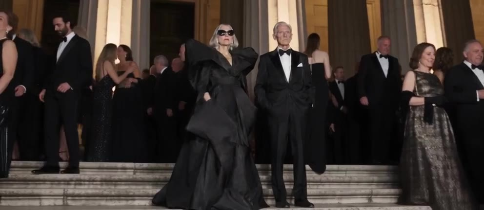
Untersicht
Das ältere Paar steht still auf der Treppe, sie schaut direkt in die Kamera.
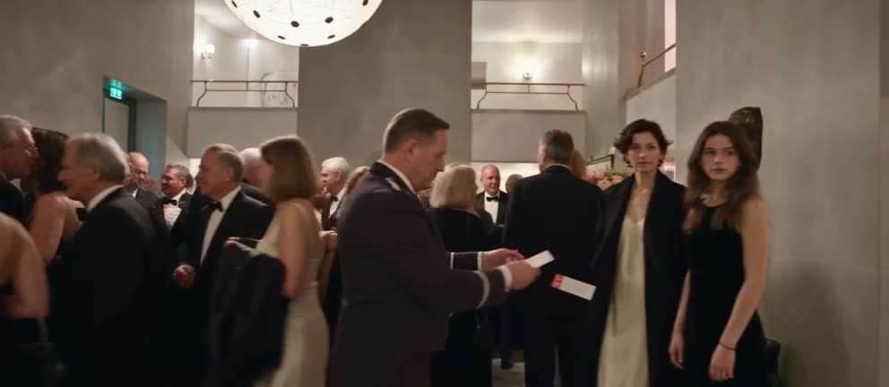
Einlass
Weitwinkel unter dem Kugellüster, die Mutter reicht zwei Karten.
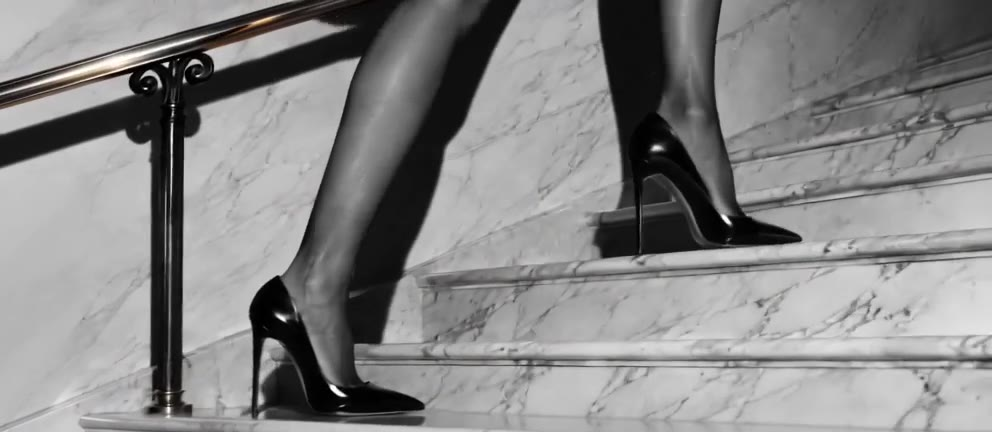
Schritte
Lackpumps auf Marmor, jeder Schritt einzeln und etwas zu laut.
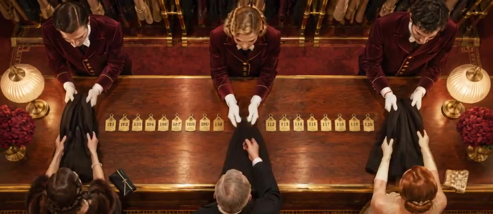
Vogelperspektive
Garderobentresen senkrecht von oben: Hände, Mäntel, Messingmarken.
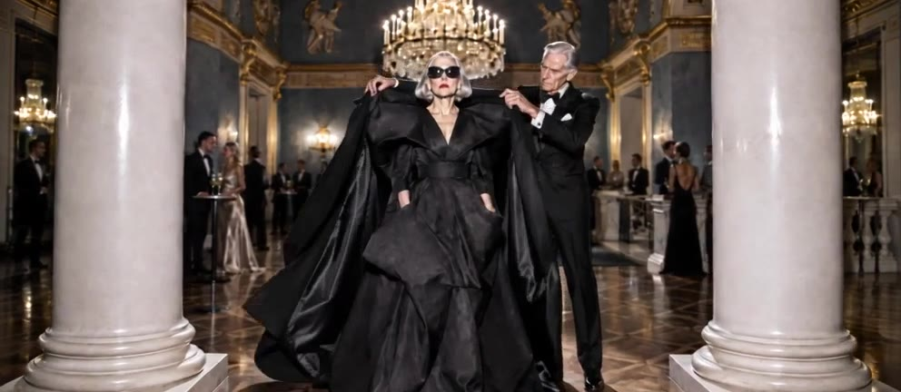
Fashion-Shot
Frontal zwischen zwei Säulen, ausdrucksloser Blick in die Kamera.
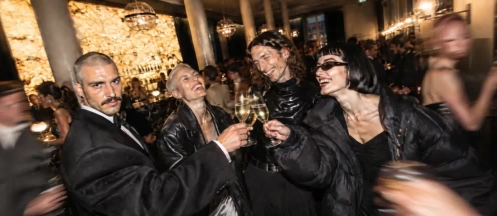
Bar
Handkamera in der Freundesgruppe, Lachen, Anstoßen.
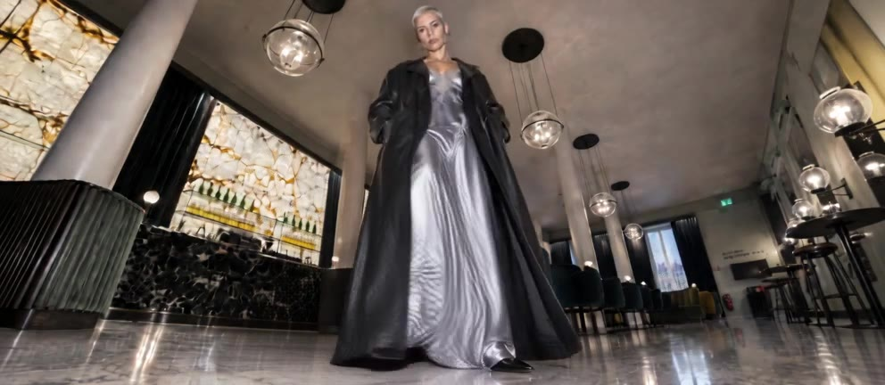
Extreme Untersicht
Die Frau mit Buzzcut im Silberkleid schaut auf uns herab.
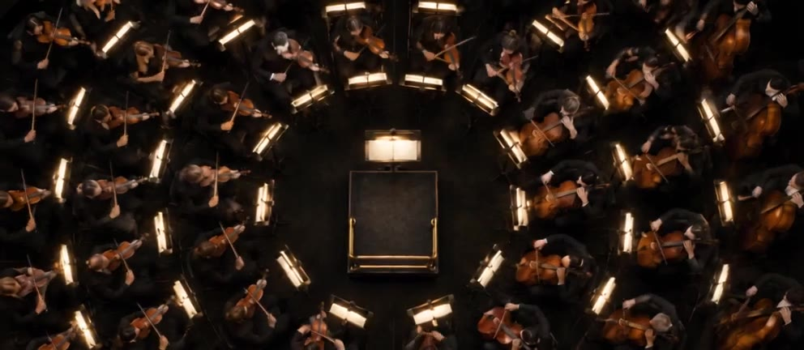
Graben
Senkrecht von oben im Dunkeln, Pultlampen und Bögen.
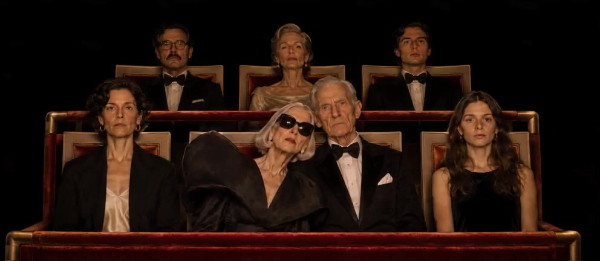
Loge
Dunkel und frontal, alle reglos, sie legt den Kopf auf seine Schulter.
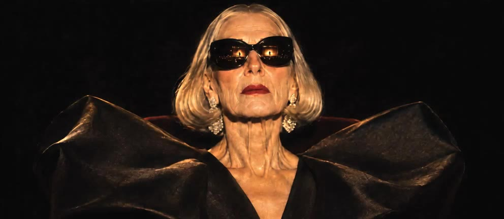
Porträt
Die alte Dame im Saal, Sonnenbrille, skulpturale Robe.
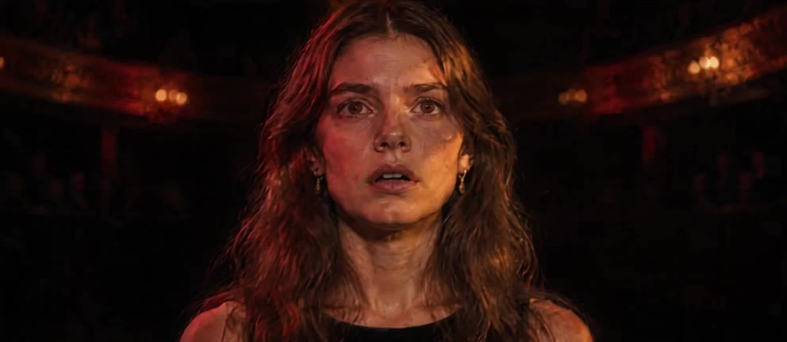
Augen
Das Licht der Bühne spiegelt sich in den Augen der Tochter.
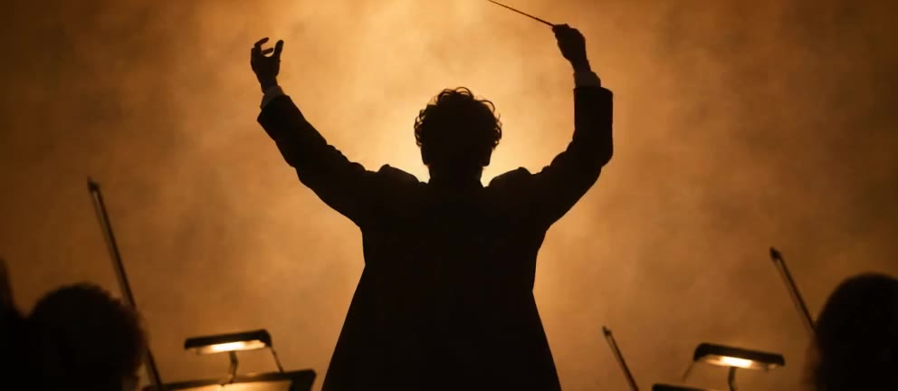
Dirigent
Aus dem Graben von unten im Gegenlicht, Arme hoch.
Kinospot · 30 Sekunden
Entspricht dem Moodfilm
Von der Piazza vor dem Haus bis zu dem einen Moment im Saal, in dem alle aufstehen.
00–15
Die Piazza
Kurz und auf den Takt geschnitten. Nur Sounddesign, nah und etwas zu laut.
00–02
Außen. Das Nationaltheater bei Nacht, symmetrische Totale aus leichter Untersicht. Die Säulen leuchten, von allen Seiten kommen Gäste über den Max-Joseph-Platz wie auf eine Piazza.
Schritte auf Pflaster, Stimmen von allen Seiten, eine Tram in der Ferne.
02–04
Treppe. Weitwinkel, extreme Untersicht. Das ältere Paar steht still auf den Stufen, um sie herum fließen die Gäste. Sie, silberner Bob, schwarze Sonnenbrille, skulpturale Robe, schaut direkt in die Kamera.
Absätze auf Stein, Stoff raschelt, nah und etwas zu laut.
04–05
Schuhe. Schnorchelobjektiv auf Bodenhöhe zwischen den Füßen hindurch: weiße Sneaker, Lackpumps, Oxfords, ein Seidensaum.
Jeder Schritt einzeln: Highheels, Sneaker, Ledersohlen.
05–07
Einlass. Weitwinkel von unten unter dem Kugellüster. Die Mutter reicht zwei Karten, die Tochter legt den Kopf in den Nacken und schaut nach oben.
Gemurmel unter der hohen Decke, Kartenabriss.
07–08
Garderobe. Vogelperspektive senkrecht auf den Tresen: Hände, Mäntel, Messingmarken.
Garderobenmarken klacken auf den Tresen, Bügel.
08–10
Säulenfoyer. Frontal zwischen zwei Säulen, wie ein Fashion-Shot. Er nimmt ihr den Mantel ab, darunter die Robe. Sie schaut ausdruckslos in die Kamera.
Mantelstoff gleitet, Highheels auf Marmor.
10–12
Bar. Handkamera mitten in der Freundesgruppe, Lachen, Anstoßen. Der Mann mit rasiertem Kopf dreht sich und schaut ins Objektiv.
Gläser stoßen an, Lachen, Gemurmel der Bar.
12–14
Tablett. Die Kamera fährt auf einem Silbertablett durch die Menge und stellt ein Glas vor ihm ab. Er nickt, ohne hinzusehen.
Das Glas setzt hart auf dem Marmor auf.
14–15
Untersicht. Vom Boden aus: die Frau mit Buzzcut im Ledertrench über dem Silberkleid schaut auf uns herab.
Leder knarzt.
15–18
Der Graben
Das Orchester stimmt ein. Dann Stille.
15–17
Orchestergraben. Senkrecht von oben im Dunkeln: Pultlampen, Musiker in Schwarz, die Bögen heben sich.
Das Orchester stimmt ein: die Oboe gibt den Ton, Streicher, Blech und Pauke durcheinander.
17–18
Bögen. Schnorchelobjektiv dicht über den Saiten, ein Lichtstrahl, oben schneidet die Hand des Dirigenten ins Bild.
Ein Cello stimmt nach, dann Stille.
18–30
Der Saal
Dunkel, länger und ruhiger geschnitten. Mitten im Walkürenritt, in 7.1 aus allen Richtungen.
18–21
Logentür. Im Rangumgang öffnen weiße Handschuhe eine Logentür. Der Blick geht durch die Loge hinüber zu den Rängen.
Mit der Tür sind wir mitten im Walkürenritt: voller Orchesterklang aus allen Richtungen des Kinosaals.
21–23
Volle Loge. Dunkel, frontal, alle Gäste reglos. Die alte Dame legt den Kopf auf die Schulter ihres Mannes.
Walkürenritt.
23–24
Augen. Extremes Close-up der Tochter, das Licht der Bühne spiegelt sich in ihren Augen.
Walkürenritt.
24–26
Dirigent. Aus dem Graben von unten im Gegenlicht, Arme hoch, das Orchester in kleinen Lichtinseln.
Das Finale baut sich auf.
26–27
Logenbrüstung. Der Mann von der Bar lehnt sich vor, die Lässigkeit ist weg, seine Freunde sind still.
Walkürenritt.
27–29
Das Haus steht. Nah und seitlich an einer Reihe entlang: Alle stehen gleichzeitig auf, fast nur Silhouetten und Profile gegen warmes Streiflicht. Keine Totale des Saals.
Großes Finale, letzter Schlag, ein Atemzug Stille.
29–30
Mutter und Tochter. Die Tochter dreht sich um und sieht, dass ihre Mutter weint. Sie nimmt ihre Hand. Schwarz, Claim.
Tosender Applaus von allen Seiten.
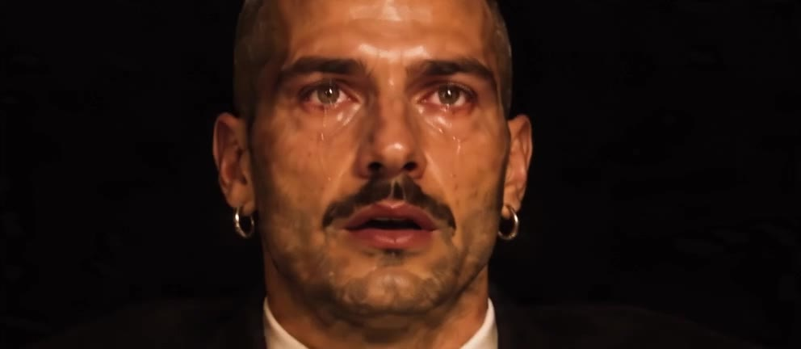
Alle fühlen
dasselbe
Die Bühne bleibt außerhalb des Bildes
Figuren
Cast
Geschichte 1
Mutter & Tochter
- Mutter, 40, kommt direkt aus dem Büro.
- Tochter, um die 19, Samtkleid und weiße Sneaker.
- Am Ende sieht die Tochter, dass ihre Mutter weint, und nimmt ihre Hand.
Geschichte 2
Das ältere Paar
- Sie: silberner Bob, schwarze Sonnenbrille, skulpturale Robe.
- Er bindet die Fliege, sie zieht sie gerade.
- In der Loge legt sie den Kopf auf seine Schulter.
Cast
Die Freunde
- Eine edgy Gruppe um die 30, vier Personen.
- Der Mann mit rasiertem Kopf, die Frau mit Buzzcut im Ledertrench über dem Silberkleid.
- An der Bar laut und lässig, in der Loge still.
Langversion · 1:30 Minuten
Drei Teile
Wer sich im Foyer streift, findet sich im Saal wieder
Die Langversion stellt die Figuren vorher in ihrem Alltag vor und lässt ihre Wege sich im Haus kreuzen. Dazu gehören die Stränge zu Hause, der Match Cut vom Schuh auf die Treppe und die Kamerafahrt durch die Logenwände. Und das Zusammenkommen: Wer sich im Foyer nur gestreift hat, findet sich am Ende im Saal mit einem Blick wieder.
00:00–00:24
Teil 1 · Heute AbendKein Score, nur Sounddesign. Jede Figur bekommt ein eigenes, stilles Bild.
00–04
Die alte Dame zu Hause. Vogelperspektive auf ihr Bett, die skulpturale Robe liegt darauf ausgebreitet. Sie steht am Fenster und setzt die Sonnenbrille auf, obwohl es Abend ist.
Straße durchs offene Fenster, ein Bügel klackt an der Schranktür.
04–07
Ihr Mann am Spiegel. Er bindet die Fliege, zum dritten Mal. Sie tritt hinter ihn und zieht sie gerade, ohne ein Wort. Frontal durch den Spiegel.
Seide reibt auf Seide, ein kurzes Ausatmen.
07–11
Die Mutter im Büro. Abendlicht, ein Call läuft. Sie schaut auf die Uhr, sagt „Ich muss los“ und klappt den Laptop zu. Auf dem Handy an die Tochter: „Zieh die schönen Schuhe an.“
Stimmen aus dem Laptop, der Deckel klappt hart zu.
11–14
Die Tochter in ihrem Zimmer. Samtkleid, vor ihr die Pumps und die weißen Sneaker. Sie schaut in die Kamera und nimmt die Sneaker.
Das Handy vibriert auf dem Holzboden.
14–18
Die Freunde. Ein Lastenaufzug, Neonlicht, alle vier stehen frontal nebeneinander wie auf dem Castingbild und schauen ausdruckslos ins Objektiv. Die Frau mit Buzzcut zieht den Ledertrench über das Silberkleid.
Neonröhre summt, Leder knarzt, Aufzugsgong.
18–21
Unterwegs. Tram bei Nacht, im Fenster spiegeln sich Mutter und Tochter nebeneinander. Gegenschnitt: das alte Paar im Fond eines Taxis, ihre Hand auf seiner.
Tram auf den Schienen, Blinker im Taxi.
21–24
Match Cut. Der Sneaker der Tochter steigt aus der Tram und landet im nächsten Bild auf der ersten Stufe des Nationaltheaters.
Die Sohle trifft laut auf Stein.
00:24–00:52
Teil 2 · Die PiazzaWie im 30-Sekunden-Spot, aber länger und mit den ersten Berührungen zwischen den Figuren.
24–28
Außen. Symmetrische Totale, das Haus leuchtet, die Piazza füllt sich von allen Seiten. Die Kamera steht.
Schritte auf Pflaster, Stimmen von allen Seiten.
28–31
Treppe. Extreme Untersicht, das alte Paar steht still im Strom der Gäste, sie schaut in die Kamera.
Absätze auf Stein, nah und etwas zu laut.
31–33
Schuhe. Schnorchelobjektiv auf Bodenhöhe zwischen Sneakern, Lackpumps und Oxfords.
Jeder Schritt einzeln.
33–36
Einlass. Weitwinkel von unten unter dem Kugellüster. Die Mutter reicht zwei Karten, die Tochter legt den Kopf in den Nacken.
Gemurmel unter der hohen Decke, Kartenabriss.
36–38
Garderobe. Senkrecht von oben auf den Tresen: Hände, Mäntel, Messingmarken.
Garderobenmarken klacken auf den Tresen.
38–42
Säulenfoyer. Frontal zwischen zwei Säulen nimmt er ihr den Mantel ab, darunter die Robe. Die Tochter steht ein paar Meter weiter und starrt. Die alte Dame schaut über die Sonnenbrille zurück und nickt ihr kaum merklich zu.
Highheels auf Marmor, Gemurmel im Saal nebenan.
42–46
Bar. Handkamera in der Freundesgruppe, Lachen, Gläser. Die Kamera fährt auf dem Silbertablett über die Köpfe und stellt ein Glas ab.
Gläser stoßen an, das Glas setzt hart auf.
46–49
Begegnung an der Bar. Der alte Herr will zwei Gläser holen, der Mann mit rasiertem Kopf rückt zur Seite und lässt ihn vor. Ein kurzer Blick zwischen beiden, mehr nicht. Danach die Frau mit Buzzcut aus extremer Untersicht.
Bar-Gemurmel, Leder knarzt.
49–52
Gong. Eine Cellistin in Schwarz schiebt sich mit ihrem Koffer durchs Foyer, jemand macht ihr Platz. Alle stellen gleichzeitig die Gläser ab.
Gong. Gläser auf Marmor, die Stimmen werden leiser.
00:52–01:24
Teil 3 · Der SaalDunkel, die Kamera wird ruhig. Die Fahrt durch die Logen trägt den Mittelteil.
52–55
Orchestergraben. Senkrecht von oben, die Cellistin setzt sich, die Bögen heben sich.
Das Orchester stimmt ein: die Oboe gibt den Ton, Streicher, Blech und Pauke durcheinander.
55–57
Bögen. Schnorchelobjektiv dicht über den Saiten, oben schneidet die Hand des Dirigenten ins Bild.
Ein Cello stimmt nach, dann Stille.
57–60
Logentür. Im ruhigen Rangumgang öffnen weiße Handschuhe eine Logentür. Licht fällt in den Gang.
Mit der Tür sind wir mitten im Walkürenritt: voller Orchesterklang aus allen Richtungen des Kinosaals.
60–70
Fahrt durch die Logen. Eine seitliche Fahrt auf Augenhöhe, ohne sichtbaren Schnitt durch zwei Trennwände. Loge A: die Freunde, der Mann lehnt sich nach vorn. Loge B: das alte Paar, sie legt den Kopf auf seine Schulter. Loge C: fremde Gäste, eine Frau dirigiert mit zwei Fingern auf der Armlehne.
Walkürenritt, der Raumklang wechselt mit jeder Loge.
70–73
Parkett. Extremes Close-up der Augen der Tochter. Gegenschnitt: Die Mutter schaut nicht nach vorn, sondern ihre Tochter an.
Walkürenritt.
73–77
Dirigent. Aus dem Graben von unten im Gegenlicht. Dazwischen im Takt halbe Sekunden: die Gesichter aus dem Foyer, eins nach dem anderen.
Das Finale baut sich auf.
77–80
Das Haus steht. Nah und seitlich an einer Reihe entlang: Alle stehen gleichzeitig auf, fast nur Silhouetten und Profile gegen warmes Streiflicht. Keine Totale des Saals.
Großes Finale, letzter Schlag, ein Atemzug Stille.
80–84
Die Blicke. Von Loge zu Loge sehen sich der alte Herr und der Mann von der Bar an und nicken. Die alte Dame schaut hinunter ins Parkett zur Tochter. Die Tochter dreht sich zu ihrer Mutter, sieht, dass sie weint, und nimmt ihre Hand.
Tosender Applaus von allen Seiten.
01:24–01:30
Ende. Der Applaus füllt den Kinosaal. Schwarz. „Bayerische Staatsoper. Ein Haus für alle.“ Darunter Spielplan und Karten.
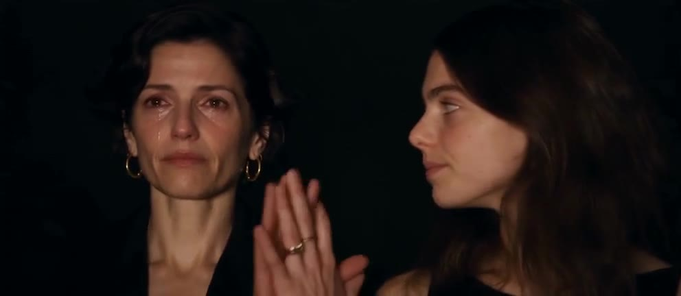
Ein Dreh,
zwei Fassungen
30 Sek. · 1:30 Min. · 16:9 · 9:16
Dreh, Musik und Schnitt
Produktion
Fassungen
Beide Fassungen kommen aus einem Dreh: 30 Sekunden fürs Kino, 1:30 Minuten als Langversion, dazu Cut-downs in 16:9 und 9:16.
Schnittrhythmus
Vor dem Saal kurz und auf den Takt geschnitten, viele Einstellungen unter zwei Sekunden. Im Saal länger und ruhiger, damit die Gesichter wirken. Die Stille nach dem letzten Ton bleibt stehen.
Kamera
Handkamera nur im Foyer und an der Bar. Sonst steht die Kamera oder fährt kontrolliert: Weitwinkel aus Untersicht, Vogelperspektive auf Garderobe und Graben, Schnorchelobjektiv für Schuhe und Saiten.
Logenfahrt
Drei gedrehte Teilstücke mit gleicher Höhe, Blickachse und Geschwindigkeit. Die Wandübergänge entstehen in der Postproduktion aus Clean Plates und vermessener Wandgeometrie. Vor dem Hauptdreh testen wir einen Übergang.
Musik
Bis zur Logentür reines Sounddesign, etwas lauter als normal. Ab der Tür eine Aufnahme des Walkürenritts mit dem Staatsorchester, mitten im Stück eingestiegen, in 7.1 aus allen Richtungen bis zum Finale und zum Applaus. Für 30 Sekunden und 1:30 Minuten je ein eigener Schnitt der Partitur. „Die Walküre“ wurde 1870 im Nationaltheater uraufgeführt.
Licht im Saal
Dunkel, die Gesichter nur vom Licht der Bühne getroffen, das außerhalb des Bildes bleibt. Im Saal nur Close-ups, Porträts und Silhouetten, keine Totalen mit Hunderten Menschen.
Drehtage
30-Sekunden-Fassung: ein Drehtag während einer Abendvorstellung plus Saal-Tableaus mit Komparsen. Die Langversion braucht zusätzlich einen Tag für die Wohnungen, das Büro, Aufzug und Tram sowie die Logenfahrt.
Schwarz. Claim.
Bayerische Staatsoper.
Ein Haus für alle.
Haus der Begegnung · Kinospot